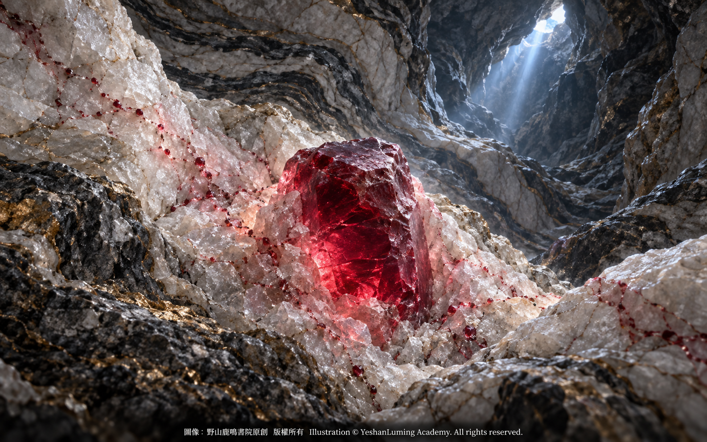

燃燒的地下火焰 · 解密紅寶石的誕生與傳奇The Burning Flame Beneath the Earth · Unraveling the Birth and Legend of Ruby
The World of Gemstones · Ruby SeriesThe Burning Flame Beneath the Earth · Unraveling the Birth and Legend of Ruby
The World of Gemstones · Ruby Series燃燒的地下火焰 · 解密紅寶石的誕生與傳奇
寶石世界·紅寶石篇
寶石世界·紅寶石篇（101）The World of Gemstones · Ruby Series (101)
在人類長達數千年的珠寶歷史中，如果有一種寶石能夠完美代言極致的熱情與財富，那必然是紅寶石。古印度人懷著敬畏的心情，將其尊稱為 Ratnaraj，在梵文中意為「寶石之王」；在若干《聖經》譯本的《箴言》中，也曾留下「智慧的價值遠勝紅寶石」的感嘆。
歷代帝王將相、珠寶收藏家與神祕主義者，無不為那抹如同燃燒火焰般的紅色而癡迷。然而，這種在現代拍賣會上可以拍出數百萬、甚至數千萬美元天價的寶石，本質上究竟是什麼？它又是如何在大地深處經歷漫長的地質演變，最終孕育出那抹攝人心魄的紅色光芒？
要揭開紅寶石的神祕面紗，我們必須將時鐘撥回遙遠的地質年代，潛入地球表面之下，窺探一場由岩石、元素、溫度與壓力共同完成的大自然魔法。
與誕生於地幔深處的鑽石不同，紅寶石是名副其實的「地殼之子」。在寶石學的定義中，紅寶石並不是一種獨立的礦物，而是剛玉家族中最引人注目的成員。
剛玉的主要化學成分十分單純，是由鋁和氧組成的三氧化二鋁晶體（Al2O3）。在理想而純淨的狀態下，剛玉本身是無色透明的，乾淨得像一塊冰。
然而，這塊純淨的「冰」，在漫長的地質演變中，卻可能走向截然不同的命運。如果剛玉晶體在生長時混入微量的鐵和鈦等致色元素，便可能呈現深邃的藍色，成為我們熟知的藍色藍寶石。
這也帶來了寶石學中一個十分重要的分類原則：在寶石級剛玉家族中，達到紅寶石顏色範圍的紅色品種被稱為紅寶石；其他顏色，包括藍、綠、黃、粉紅、紫色以及無色，通常都歸入藍寶石的範疇。紅寶石與藍寶石看似截然不同，實際上卻是同根而生的兄弟。
在人類長達數千年的珠寶歷史中，如果有一種寶石能夠完美代言極致的熱情與財富，那必然是紅寶石。古印度人懷著敬畏的心情，將其尊稱為 Ratnaraj，在梵文中意為「寶石之王」；在若干《聖經》譯本的《箴言》中，也曾留下「智慧的價值遠勝紅寶石」的感嘆。
歷代帝王將相、珠寶收藏家與神祕主義者，無不為那抹如同燃燒火焰般的紅色而癡迷。然而，這種在現代拍賣會上可以拍出數百萬、甚至數千萬美元天價的寶石，本質上究竟是什麼？它又是如何在大地深處經歷漫長的地質演變，最終孕育出那抹攝人心魄的紅色光芒？
要揭開紅寶石的神祕面紗，我們必須將時鐘撥回遙遠的地質年代，潛入地球表面之下，窺探一場由岩石、元素、溫度與壓力共同完成的大自然魔法。
與誕生於地幔深處的鑽石不同，紅寶石是名副其實的「地殼之子」。在寶石學的定義中，紅寶石並不是一種獨立的礦物，而是剛玉家族中最引人注目的成員。
剛玉的主要化學成分十分單純，是由鋁和氧組成的三氧化二鋁晶體（Al2O3）。在理想而純淨的狀態下，剛玉本身是無色透明的，乾淨得像一塊冰。
然而，這塊純淨的「冰」，在漫長的地質演變中，卻可能走向截然不同的命運。如果剛玉晶體在生長時混入微量的鐵和鈦等致色元素，便可能呈現深邃的藍色，成為我們熟知的藍色藍寶石。
這也帶來了寶石學中一個十分重要的分類原則：在寶石級剛玉家族中，達到紅寶石顏色範圍的紅色品種被稱為紅寶石；其他顏色，包括藍、綠、黃、粉紅、紫色以及無色，通常都歸入藍寶石的範疇。紅寶石與藍寶石看似截然不同，實際上卻是同根而生的兄弟。
紅寶石之所以能夠從剛玉家族中脫穎而出，享有至高無上的尊榮，是因為它在形成過程中經歷了一場極其罕見的元素替換。
當剛玉晶體在地殼中適宜的溫度、壓力與化學環境下緩慢生長時，如果晶格中極少部分的鋁離子被鉻離子取代，奇蹟便誕生了。鉻離子會選擇性吸收可見光中的部分藍光和綠光，使未被吸收的紅光進入人眼，從而使原本無色的剛玉呈現出濃郁的紅色。
這種看似微不足道的元素替換，卻如同點石成金，造就了世界上最珍貴的紅色寶石——紅寶石。
然而，大自然在賦予紅寶石絕美風華的同時，也為它設下了重重限制。鉻離子的半徑比鋁離子略大，進入剛玉晶格後，會造成一定程度的晶格畸變。加上紅寶石形成環境複雜，晶體在生長及後期地質作用中可能產生各種包裹體、裂隙與內部應力，因此，大顆粒而又顏色濃郁、透明度高、內部相對純淨的天然紅寶石極其罕見。
這也解釋了彩色寶石市場上一個令人驚嘆的現象：超過五克拉的頂級天然紅寶石已屬稀世珍品，而數十克拉、甚至更大的優質藍寶石，雖然同樣珍貴，在自然界中卻相對較為常見。
紅寶石的誕生，幾乎是一場地質學上的「不可能完成的任務」。
形成紅寶石，不僅需要足夠的鋁和微量的鉻，還必須處於適宜的溫度、壓力以及相對缺乏二氧化矽的特殊環境之中。這些條件要在同一地點、同一時期恰好相遇，本身就是極其罕見的地質奇蹟。
某些世界著名的大理岩型紅寶石礦床，與大陸板塊碰撞和造山運動密切相關。以緬甸莫谷為例，在複雜的變質作用與流體活動中，適量的鋁、鉻及其他成分在低矽環境裡相互作用，最終形成了舉世聞名的莫谷紅寶石。近年的同位素年代研究顯示，部分莫谷紅寶石大約形成於二千五百萬年前。
然而，并非世界上所有紅寶石都以相同方式形成。除了莫谷等著名的大理岩型礦床之外，紅寶石也可以形成於角閃岩及其他與變質、交代作用有關的岩石環境中。莫桑比克、格陵蘭和其他產地的紅寶石，都擁有各自不同的地質故事。

Click to enlarge
這些經歷漫長地質演變才得以定型的紅寶石，天生帶有一股不妥協的野性。在莫氏硬度計上，紅寶石的硬度高達9，在常見天然寶石中僅次於鑽石，因此具有極佳的抗刮擦能力，適合長期佩戴與保存。
不過，硬度高并不代表永遠不會破裂。紅寶石如果含有較多裂隙，或者遭受猛烈撞擊，依然可能受到損傷。真正使它能夠流傳百世的，是硬度、韌性、穩定性以及人類精心保護共同作用的結果。
紅寶石的折射率約為1.762至1.770。經過良好切磨與拋光後，能呈現明亮而銳利的玻璃光澤，濃郁的紅色也會隨著光線和觀察角度的變化，展現出不同層次。
而在所有紅寶石的色澤中，有一個名字總能令收藏家與鑑定師為之屏息，那就是「鴿血紅」（Pigeon Blood）。
這個名稱最早與緬甸紅寶石密切相連。關於它的由來，流傳著不同說法：有人將其形容為白鴿眼睛中央所見的鮮紅色，也有人說它近似鴿血中最鮮豔的一抹紅色。無論傳說如何，這個古老名稱所指向的，始終是紅寶石中最鮮明、濃郁而富有生命力的紅色。
在現代彩色寶石市場上，「鴿血紅」通常用來形容色調純正、飽和度極高而明度適中的鮮豔紅色，有些紅寶石還可能帶有極其輕微的紫色調。然而，「鴿血紅」并不是一個由全球寶石實驗室共同採用的統一顏色等級，不同鑑定機構對色調、飽和度、明度、螢光、含鐵量及產地等條件，可能採用不同的判定標準。
因此，不能只憑肉眼看到一顆紅寶石顏色鮮紅，便斷定它是「鴿血紅」。在高級珠寶市場上，這一名稱是否得到權威寶石實驗室的認可，往往會對紅寶石的身價產生重要影響。
更讓寶石鑑定師著迷的，是某些高品質紅寶石背後的螢光秘密。鉻元素不僅賦予紅寶石鮮豔的顏色，也能產生獨特的紅色螢光。
當紅寶石吸收陽光或其他光源中的紫外線後，鉻離子會受到激發，并以肉眼可見的紅光釋放部分能量。于是，我們看到的紅色，不僅來自寶石對可見光的選擇性吸收，也可能得到紅色螢光的進一步增強。
緬甸莫谷等大理岩型紅寶石通常含鐵量較低，鐵對螢光的抑制作用較弱，因此往往能呈現較為強烈的紅色螢光。相反，一些與玄武岩相關、含鐵量較高的紅寶石，螢光通常較弱，顏色也可能顯得較暗。
當一顆含鐵量較低的高品質紅寶石置於日光或富含紫外線的光源下，寶石本身的紅色與內部激發的紅色螢光相互疊加，便可能產生一種令人難以移開視線的霓虹感，彷彿有一團永不熄滅的地下火焰，在寶石核心深處燃燒。
當我們理解了紅寶石的化學成分、物理特性、致色原因，以及它的誕生何其不易，便能真正讀懂為什麼歷代帝王會為之癡迷，也更能理解為什麼在現代拍賣會上，那些絕世紅寶石能創下每克拉超過百萬美元的成交紀錄。
它不只是一塊石頭，更是大自然將地質、化學與光學演繹到極致的燃燒奇蹟。
為了方便讀者未來選購、收藏或研究紅寶石，我們在本文最後，將紅寶石的主要物理性質與寶石學鑑定指標綜合整理如下。
在寶石學中，紅寶石的英文名稱為 Ruby。這個名稱經由古法語傳入英語，其詞源可以追溯至拉丁文 ruber，意為紅色。
它的礦物學名稱為剛玉（Corundum），主要化學成分為三氧化二鋁（Al2O3），其紅色主要由進入晶格的微量鉻元素（Cr）形成。
在晶體結構上，紅寶石屬於三方晶系（Trigonal Crystal System），晶體外形常呈桶狀、板狀或近似六方柱狀。
在物理性質方面，紅寶石的莫氏硬度為9，在常見天然寶石中僅次於鑽石；其相對密度，也就是比重，通常約為4.00，常見範圍約為3.99至4.05。
在光學性質方面，紅寶石屬於一軸晶負光性的雙折射寶石，其折射率約為1.762至1.770，雙折射率約為0.008至0.010。
使用手持式分光鏡觀察時，紅寶石通常可見黃綠光區的寬吸收帶、藍光區約468、475及476奈米的吸收線，以及紅光區約692與694奈米的特徵雙線。在適當條件下，還可觀察到由鉻元素產生的鮮明紅色螢光。
紅寶石還具有明顯的二色性。使用二色鏡從不同結晶方向觀察，通常可以看到紫紅與橙紅兩種方向色。具體顏色會隨紅寶石本身的色調、微量元素含量及觀察方向而有所不同。
在長波紫外線，也就是365奈米紫外線照射下，許多含鐵量較低的紅寶石會呈現明顯至強烈的鮮紅色螢光；含鐵量較高者，螢光則可能受到抑制。需要注意的是，螢光只能作為鑑定線索之一，不能單獨用來判斷紅寶石的天然或合成來源、地理產地、是否經過加熱處理，或者品質高低。
至此，我們已經揭開了紅寶石誕生與致色的第一層祕密。然而，當寶石鑑定師把它放到顯微鏡下，一個更加複雜、更加迷人的微觀世界，才正要展開。
（未完待續）
Throughout humanity’s thousands of years of jewelry history, if any gemstone could perfectly embody the ultimate expressions of passion and wealth, it would surely be ruby. With reverence, the people of ancient India honored it as Ratnaraj, Sanskrit for the “King of Gemstones.” In certain translations of the Book of Proverbs in the Bible, we also find the reflection that wisdom is worth far more than rubies.
Emperors, nobles, jewelry collectors, and mystics throughout history have all been captivated by that burning, flame-like red. Yet what, in essence, is this gemstone that can command millions or even tens of millions of dollars at modern auctions? And how did it undergo a long and complex geological evolution deep within the earth before finally giving birth to that mesmerizing red glow?
To lift the mysterious veil from ruby, we must turn the clock back to a distant geological age and journey beneath the earth’s surface, where we can glimpse an act of natural magic performed jointly by rocks, elements, temperature, and pressure.
Unlike diamond, which is born deep within the mantle, ruby is truly a “child of the earth’s crust.” In gemological terms, ruby is not an independent mineral species, but the most captivating member of the corundum family.
The principal chemical composition of corundum is remarkably simple. It is a crystal of aluminum oxide, composed of aluminum and oxygen Al2O3. In its ideal and pure state, corundum is colorless and transparent, as clear as a block of ice.
Yet over the course of long geological evolution, this pure “ice” may meet an entirely different fate. If trace amounts of coloring elements such as iron and titanium enter the corundum crystal as it grows, the crystal may take on a profound blue color and become the blue sapphire familiar to us all.
This leads us to an important principle of gemological classification: within the family of gem-quality corundum, the red variety that falls within the accepted color range for ruby is called ruby, while all other colors—including blue, green, yellow, pink, purple, and colorless—are generally classified as sapphire. Ruby and sapphire may appear entirely different, but in reality they are siblings born from the same root.
Throughout humanity’s thousands of years of jewelry history, if any gemstone could perfectly embody the ultimate expressions of passion and wealth, it would surely be ruby. With reverence, the people of ancient India honored it as Ratnaraj, Sanskrit for the “King of Gemstones.” In certain translations of the Book of Proverbs in the Bible, we also find the reflection that wisdom is worth far more than rubies.
Emperors, nobles, jewelry collectors, and mystics throughout history have all been captivated by that burning, flame-like red. Yet what, in essence, is this gemstone that can command millions or even tens of millions of dollars at modern auctions? And how did it undergo a long and complex geological evolution deep within the earth before finally giving birth to that mesmerizing red glow?
To lift the mysterious veil from ruby, we must turn the clock back to a distant geological age and journey beneath the earth’s surface, where we can glimpse an act of natural magic performed jointly by rocks, elements, temperature, and pressure.
Unlike diamond, which is born deep within the mantle, ruby is truly a “child of the earth’s crust.” In gemological terms, ruby is not an independent mineral species, but the most captivating member of the corundum family.
The principal chemical composition of corundum is remarkably simple. It is a crystal of aluminum oxide, composed of aluminum and oxygen Al2O3. In its ideal and pure state, corundum is colorless and transparent, as clear as a block of ice.
Yet over the course of long geological evolution, this pure “ice” may meet an entirely different fate. If trace amounts of coloring elements such as iron and titanium enter the corundum crystal as it grows, the crystal may take on a profound blue color and become the blue sapphire familiar to us all.
This leads us to an important principle of gemological classification: within the family of gem-quality corundum, the red variety that falls within the accepted color range for ruby is called ruby, while all other colors—including blue, green, yellow, pink, purple, and colorless—are generally classified as sapphire. Ruby and sapphire may appear entirely different, but in reality they are siblings born from the same root.
Ruby was able to distinguish itself from the rest of the corundum family and attain its supreme status because, during its formation, it underwent an extraordinarily rare elemental substitution.
As a corundum crystal grows slowly under suitable conditions of temperature, pressure, and chemical composition within the earth’s crust, a miracle occurs if a tiny proportion of the aluminum ions in its crystal lattice are replaced by chromium ions. The chromium ions selectively absorb portions of the blue and green regions of visible light, allowing the unabsorbed red light to reach our eyes and transforming originally colorless corundum into a gemstone of richly saturated red.
This seemingly insignificant elemental substitution works almost like alchemy, creating the world’s most precious red gemstone—ruby.
Yet even as nature bestowed extraordinary beauty upon ruby, it also imposed countless restrictions on its creation. Chromium ions are slightly larger than aluminum ions, and when they enter the corundum lattice, they cause a certain degree of lattice distortion. Combined with the complex environments in which ruby forms, this means that crystals may develop various inclusions, fractures, and internal stresses during their growth and subsequent geological history. Consequently, large natural rubies with rich color, high transparency, and relatively clean interiors are exceptionally rare.
This also explains an astonishing phenomenon in the colored gemstone market: a top-quality natural ruby weighing more than five carats is already an exceedingly rare treasure, while fine sapphires weighing dozens of carats or even more, although also precious, are relatively more common in nature.
The birth of a ruby is almost a geological “mission impossible.”
Ruby formation requires not only sufficient aluminum and trace amounts of chromium, but also suitable temperature and pressure, together with a special environment relatively deficient in silica. For all these conditions to converge in the same place at the same time is itself an extraordinarily rare geological miracle.
Some of the world’s famous marble-hosted ruby deposits are closely connected with continental collision and mountain-building events. In Mogok, Myanmar, for example, suitable amounts of aluminum, chromium, and other components interacted within a low-silica environment amid complex metamorphic processes and fluid activity, ultimately creating the world-renowned Mogok rubies. Recent isotopic dating research indicates that some Mogok rubies formed approximately twenty-five million years ago.
However, not all rubies in the world formed in the same way. In addition to famous marble-hosted deposits such as Mogok, ruby can also form in amphibolite and in other rock environments associated with metamorphic and metasomatic processes. The rubies of Mozambique, Greenland, and other sources each possess their own distinct geological stories.
Click to enlarge
Rubies shaped through such a long geological evolution seem to possess an innately uncompromising wildness. Ruby has a hardness of 9 on the Mohs scale, second only to diamond among commonly encountered natural gemstones. It therefore has excellent resistance to scratching and is well suited to long-term wear and preservation.
High hardness, however, does not mean that ruby can never break. A ruby containing numerous fractures, or one subjected to a severe impact, can still be damaged. What truly enables it to survive through the centuries is the combined effect of its hardness, toughness, stability, and the careful protection given to it by human hands.
Ruby has a refractive index of approximately 1.762 to 1.770. When skillfully cut and polished, it can display a bright, sharp vitreous luster, while its rich red color reveals different layers as the lighting conditions and viewing angle change.
Among all the colors of ruby, one name never fails to make collectors and gemologists hold their breath: “Pigeon Blood.”
This name has long been closely associated with rubies from Myanmar. Different stories have been passed down regarding its origin. Some compare the color to the vivid red seen at the center of a white pigeon’s eye, while others say that it resembles the brightest shade found in a pigeon’s blood. Whatever the legend may be, this ancient name has always pointed toward the most vivid, intense, and vibrant red found in ruby.
In the modern colored gemstone market, “Pigeon Blood” is generally used to describe a vivid red with a pure hue, extremely high saturation, and moderate tone. Some such rubies may also display an exceedingly slight purplish tint. However, “Pigeon Blood” is not a single color grade universally adopted by gemological laboratories worldwide. Different laboratories may apply different criteria regarding hue, saturation, tone, fluorescence, iron content, geographic origin, and other conditions.
For this reason, a ruby cannot be identified as “Pigeon Blood” merely because it appears vividly red to the unaided eye. In the high jewelry market, whether this designation is recognized by a respected gemological laboratory can have a significant influence on the value of the ruby.
Even more fascinating to gemologists is the secret of fluorescence behind certain fine rubies. Chromium not only gives ruby its vivid color, but can also produce its distinctive red fluorescence.
When a ruby absorbs ultraviolet radiation from sunlight or another light source, its chromium ions become excited and release part of that energy as red light visible to the human eye. The red we see, therefore, comes not only from the gemstone’s selective absorption of visible light, but may also be further intensified by red fluorescence.
Marble-hosted rubies from Mogok in Myanmar and similar deposits generally contain relatively little iron. Because the suppressing effect of iron on fluorescence is weaker, these rubies often display stronger red fluorescence. By contrast, some basalt-related rubies with higher iron content generally exhibit weaker fluorescence and may also appear darker.
When a fine ruby with low iron content is placed in daylight or beneath a light source rich in ultraviolet radiation, the gemstone’s inherent red color and its internally excited red fluorescence may overlap, producing an irresistible neon-like effect—as though an eternal subterranean flame were burning deep within the heart of the gemstone.
Once we understand ruby’s chemical composition, physical properties, cause of color, and the extraordinary difficulty of its birth, we can truly appreciate why emperors throughout history were so captivated by it. We can also better understand why exceptional rubies at modern auctions can command prices exceeding one million dollars per carat.
It is not merely a stone, but a burning miracle in which nature has brought geology, chemistry, and optics to their ultimate expression.
For the convenience of readers who may wish to purchase, collect, or study rubies in the future, we conclude this article with a comprehensive summary of ruby’s principal physical properties and gemological identification characteristics.
In gemology, ruby is known in English as Ruby. The word entered English through Old French, and its origins can be traced to the Latin word ruber, meaning red.
Its mineralogical name is corundum, and its principal chemical composition is aluminum oxide Al2O3. Its red color is produced primarily by trace amounts of chromium (Cr) entering the crystal lattice.
In terms of crystal structure, ruby belongs to the trigonal crystal system. Its crystals commonly occur in barrel-shaped, tabular, or approximately hexagonal prismatic forms.
Regarding its physical properties, ruby has a Mohs hardness of 9, second only to diamond among commonly encountered natural gemstones. Its relative density, or specific gravity, is generally about 4.00, with a common range of approximately 3.99 to 4.05.
In terms of optical properties, ruby is a doubly refractive gemstone with a uniaxial negative optic character. Its refractive index is approximately 1.762 to 1.770, and its birefringence is approximately 0.008 to 0.010.
When examined with a handheld spectroscope, ruby commonly displays a broad absorption band in the yellow-green region, absorption lines at approximately 468, 475, and 476 nanometers in the blue region, and characteristic double lines at approximately 692 and 694 nanometers in the red region. Under suitable conditions, vivid red fluorescence produced by chromium may also be observed.
Ruby also exhibits distinct dichroism. When viewed through a dichroscope along different crystallographic directions, it commonly shows purplish red and orangy red directional colors. The precise colors vary according to the ruby’s inherent hue, trace-element content, and direction of observation.
Under long-wave ultraviolet radiation at 365 nanometers, many rubies with relatively low iron content exhibit distinct to strong vivid red fluorescence, while fluorescence may be suppressed in rubies with higher iron content. It is important to remember that fluorescence is only one identification clue. By itself, it cannot determine whether a ruby is natural or synthetic, establish its geographic origin, reveal whether it has undergone heat treatment, or determine its quality.
At this point, we have uncovered the first layer of secrets behind ruby’s birth and color. Yet when a gemologist places it beneath a microscope, an even more complex and enchanting microscopic world is only beginning to unfold.
(To be continued)